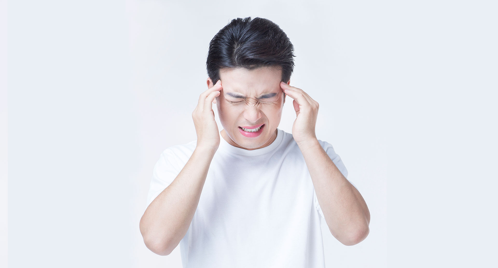

일상생활 속 단골질환, 두통
신경계 질환(두통)
실제 임상에서는 스트레스, 불안, 우울 등의 원인이 가질적 원인보다 흔하지만, 검사를 통해 문제를 우선적으로 감별진단해야한다.
근긴장성 두통
스트레스가 두경부 근육을 긴장 수축시키고 혈관을 압박한 결과 허혈상태가 되어 발생한다.
박동성이 없는 양측성 두통이며, 띠를 두른 듯 조이는 통증과 승모근의 긴장과 압통을 호소한다.
우울증의 두통은 기상 후 오전에 심하지만, 근긴장성 두통은 오후에 증상이 심해진다.
Type A성격(적개심, 분노, 공격적이고 경쟁적인 특징을 가지는 성격, 혈중콜레스테롤과 심장발작의 위험이 높은 경향이 있다)은 쉽게 긴장하는 성격에서 많이 나타난다.
약물치료(항우울제 근이완제), 두경부마사지, 이완요법, biofeedback, 최면요법 등으로 치료한다.
편두통
대뇌동맥혈관의 팽창으로 인해 발생하는 편측의 박동성 두통을 말한다.
전조증으로 시각, 감각장애가 나타난 후 일축성의 격심한 두통이 2~3시간 정도 지속된다.
오심 구토와 더불어 빛과 소리에 과민해지는 증상이 동반된다. 가족력이 있으며 강박적/완벽주의적 성격에서 흔하다.
약물치료(ergoamine), 정신치료(스트레스 관리, 분노 조절)로 관리한다.
군집성 두통
군발두통이라고도 한다. 중년 남자에게 많으며 음주 후 야간에 발생하는 극심한 일측성 두통을 말한다.
안구, 전두부에 도려내는듯한 통증이 2시간 정도 지속되는데 결막 충혈 눈물, 콧물, 코막힘 등이 동반된다.
녹내장과의 감별진단이 필요하다.
직장인들의 고질병, 요통
요통이란 무엇인가?
요통은 병원에 방문하는 사람들의 주요 원인 증상 중에서 다섯 번째 빈도를 차지할 정도로 매우 흔한 질환입니다.
평생 동안 80%의 사람들이 한 번 이상 요통을 경험하고 근로자의 50%가 매년 요통을 경험하고 있는 것으로 보고 있습니다.
대부분의 요통은 큰 문제나 합병증을 발생시키지 않는 좋은 경과를 보이지만, 일부는 합병증이나 장애를 유발하는 심각한 질병일 수도 있습니다.
요통은 다양한 연령층에서 발생될 수 있으며 통증은 허리가 빠질듯하게 혹은 끊어질 듯하게 아픈 증상, 아픔이 다리로 뻗어나가는듯한 증상 등 다양한 형태로 나타날 수 있습니다.
요통 환자의 30%는 병원을 찾지 않지만, 70%는 결국 병원을 방문할 정도로 심한 증상을 나타냅니다.
급성 요통 환자의 90%는 3개월 이내에 직장에 복귀하지만, 많은 경우 증상이 재발하고 기능적 장애를 경험합니다.
따라서 심한 통증이 있을 때에는 진통제를 복용하고, 그래도 통증이 지속되거나 악화될 경우에는 병원을 방문하여 적절한 진단과 치료를 받는 것이 좋습니다.
요통의 원인은 무엇인가?
요통은 하나의 원인에 의해 발생하는 독립된 "질병"이 아니라 다양한 원인에 의해 허리부위의 통증이 발생하는 "증상"을 의미합니다.
척추는 무거운 체중을 지탱하고 있을 뿐 아니라 다양한 방향을 운동이 일어나기 떄문에 이로 인해 통증이 발생할 수 있습니다.
이러한 형태의 통증 중 가장 흔한 것이 추간판(디스크)의 퇴행인데, 이것은 척추 사이의 위치한 추간판이 나이가 들어 감에 따라 손상되고 변성됨으로 인해 발생합니다. 추간판의 퇴행이 진행되면 척추뼈 사이의 충격을 흡수하는 능력이 감소하게 되고, 그 결과 허리를 움직이거나 힘을 쓸 때 요통이 유발될 수 있습니다.
소위 '허리가 삐었다. 허리를 삐끗했다'라고 하는 요추 염좌(관절의 정상범위를 넘어서는 무리한 운동이 일어나면서 관절낭이나 인대가 손상을 받은 상태. 탈골과 달리 관절 자체는 정상 위치를 유지하고 있음.)나 척추뼈가 부러지는 요추 골절 등은 외상에 의한 요통의 대표적인 사례들입니다.
요추 염좌는 주로 잘못된 자세로 물건을 들거나 갑자기 허리르 펴거나 돌리는 등의 무리한 운동을 할 때 갑작스럽고 극심한 허리 통증이 발생하는 것으로, 척추를 지지하는 인대나 근육이 손상된 것입니다.
요추 골절은 넘어지거나 교통사고 등을 당했을 때 발생할 수 있으며, 특히 골다공증(노화나 특정 원인에 의해 뼈 속의 칼슘의 약해지면서 뼈가 약해지는 증상)이 있는 사람에게 잘 발생합니다.
"곱사등"으로 불리는 척추 측만증이나 척추 후만증은 대게 중년까지는 심각한 통증을 일으키지 않지만, 시간이 지남에 따라 척추의 변형이 점점 심해지므로 심각한 문제를 일으킬 수 있습니다.
골관절염(퇴행성 관절염), 류마티스 관절염이나 강직성 척수염 등의 염증성 질환, 척추뼈의 연결 부위가 약해지면서 척추가 앞쪽으로 이동하는 척추전방전위증, 척추관이 서서히 좁혀지면서 그 속을 지나가는 척추신경을 압박하는 척추관협착증 등도 요통을 유발할 수 있습니다.
한편, 골다공증은 그 자체로는 통증을 유발하지 않으나, 척추골절 등 뼈의 손상이 쉽게 발생하게 함으로써 2차적으로 통증을 유발합니다.
비록 흔하지는 않지만 소위 골수염이라 불리는 염증은 척추와 그 내부의 골수를 감염시키거나 추간판의 염증을 유발하여 통증을 일으킬 수 있습니다.
한편, 척추 자체에서 발생한 종양이나 다른 장기에서 척추로 전이된 암도 골절을 유발하거나 주위 조직을 침범하여 요통을 발생시킬 수 있습니다.
임신, 자궁내막증, 육체적/정신적 스트레스
위험요인
요통은 누구에게나 발생할 수 있는 매우 흔한 증상입니다. 연령, 신체 상태, 식이 요인과 비만, 유전적 요인에 따라 발생할 위험도가 달라집니다.
대부분의 사람은 30세에서 40세 사이의 시기에 요통을 처음 경험하게 됩니다. 그리고 이후 나이가 들어감에 따라 요통은 점점 더 흔하게 발생합니다.
신체 상태요통은 평소에 운동을 잘 하지 않거나 운동을 할 수 없는 상태에 있는 사람에게 더 흔히 발생합니다. 특히 평소에는 거의 운동을 하지 않다가 주말에만 과격한 운동을 하는 사람들은 평소에 운동을 하던 사람에 비해 허리의 손상을 입거나 요통이 발생할 위험이 더 높습니다.
식이요인과 비만지방이 많이 함유된 고칼로리의 음식을 먹으면서도 운동을 별로 하지 않는 생활습관을 가진 사람은 비만해질 가능성이 높으며, 그 결과 늘어난 체중으로 인해 허리에 부담이 늘어납니다.
유전적 요인"허리디스크"로 불리는 추간판탈출증의 발생위험은 유전적인 성향과도 관련 있는 것으로 알려져 있습니다.
증상
요통의 증상은 극심한 통증으로 꼼짝도 할 수 없는 경우에서부터 심하게 움직이지만 않으면 별다른 이상 증상을 느끼지 못하는 경우에 이르기까지 매우 다양하게 나타납니다. 그리고 요통의 발생 원인에 따라 환자의 연령이나 증상의 발현 양상이나 시기, 동반증상 등이 다르게 나타납니다.
운동으로 인한 질환, 스포츠 손상
스포츠 손상이란?
스포츠 손상이란, 스포츠 경기나 여가 운동시에 일어나는 모든 종류의 손상을 의미합니다. 스포츠 손상의 발생 원인으로는 직접적 혹은 간접적 외상, 과사용(overuse), 환경 요인 등이 있습니다. 외상은 직접적인 신체 접촉이나 낙상 등으로 발생하며, 과사용은 장기간에 걸친 미세 부하나 단기간의 과부하가 조직의 손상을 유발하는 것을 의미하며, 환경 요인은 잠수병이나 고산병 등과 같은 외부 환경에 의한 신체 손상을 의미합니다. 이 중 외상과 과사용이 주로 근골격계 스포츠 손상을 유발합니다. 비록 스포츠 경기나 운동 중 신체의 거의 모든 부분이 손상될 수 있으나, 스포츠 손상은 근육, 건(힘줄), 인대, 뼈, 연골 등의 근골격계의 손상이 대부분을 차지힙니다. 관절의 염좌, 긴장, 인대 파열, 건 파열, 골절 및 탈구 등이 흔한 스포츠 손상의 예입니다.
스포츠 손상이 잘 생기는 대상
스포츠를 하는 모든 사람에게서 손상이 발생할 수 있으나 어린이나 청소년, 중년의 운동선수, 여성에서 유발될 위험이 높습니다.
성숙되지 않은 어린이나 청소년은 스포츠에 대한 의욕은 앞서나 스포츠 테크닉이 부족하고 경기 규칙을 이해하지 못한 경우도 있으며 골, 인대, 근육 등 근골격계 발달이 아직 미성숙 단계이기 때문에 손상에 취약합니다. 특히 성장판은 주위 인대나 건에 비해 약하기 때문에 손상이 오기 쉽고, 손상이 될 경우 성장 장애라는 문제를 만날 수 있습니다.
중년의 운동선수의 경우 스포츠 참여 인구는 늘어나는 반면, 연령의 증가와 더불어 신체 기능이 떨어짐에도 과거와 같은 수준의 운동을 강행하거나 급작스럽게 운동강도를 높이는 경우가 많아 손상이 빈번히 일어납니다.
여성의 경우 스포츠 참여 빈도나 강도가 과거에 비해 늘어났으나, 근 골격 구조가 남성에 비해 약한데다, 월경 주기의 따른 에스트로겐 수치의 변화로 인해 손상에 취약한 편입니다.
증상
손상 받은 부위에 따라 나타는 증상이 다를 수도 있으나, 대부분의 스포츠 손상은 급성 손상과 만성 손상으로 나뉩니다.
급성 손상에는 염좌, 골절 및 탈구 등의 손상으로 급작스러운 심한 통증, 부종, 서 있거나 걸을 수 없음, 관절 운동을 할 수 없거나 제한적임, 근력의 약화, 골절이나 탈구로 인한 외형상 변화나 쇨, 가성 운동 등이 있습니다.
만성 손상에는 장기간에 걸친 과도한 정도의 스트레스에 의한 손상으로, 활동 시 병변 부위의 통증, 휴식 시 통증의 소실, 부종 등이 있습니다.
잘 낫지 않는, 교통사고 후유증

증상
교통사고 후유증의 증상은 주증상, 기타증상으로 나뉩니다.
주증상으로는 두통, 경부통 등이 있으며 기타증상으로는 저림, 두통, 구토, 오심, 심계, 불안 등이 있습니다. 증상이 보통 3일 이내에 나타나지만 뒤늦게 발생하는 경우도 있어 수상 후 1주일간은 안정 및 주의가 필요합니다.
분류
경추 염좌형, 근증상형, 척수증상형, 경추증후군(CADS) 등이 있습니다.
교통사고 후유증의 예후
- 사고 정도가 심하면 예후가 좋지 않음
- 염좌형의 80%이상은 1개월 이내에, 늦어도 3개월 이내 회복됨
- 환자가 예민한 성격이고 연령이 높으며 만성질환자의 경우 회복속도가 느림
- 골절, 관절의 손상 또는 연부조직의 손상 등이 방사선에 나타나지 않는 경우 검사는 예후판단에 의미가 없음
- 젊은 여성의 경우 초기 회복이 느릴 수 있음
젊은 나이에도 나타날 수 있는, 척추관절 질환
관절염
퇴행성 관절염은 퇴행성 관절 질환, 골관절염이라고 불려지며, 국소적인 관절에 점진적인 관절 연골의 소실 및 그와 관련된 이차적인 변화와 증상을 동반하는 질환입니다.
관절을 보호하고 있는 연골의 점진적인 손상이나 퇴행성 볗놔로 인해 관절을 이루는 뼈와 인대 등에 손상이 일어나서 염증과 통증이 생기는 질환으로, 관절의 염증성 질환 중 가장 높은 빈도를 보입니다.
원인
예전에는 골관절염을 노화 현상의 일부로 생각하였으나, 최근에는 단순 노화 현상과는 다른 관절 연골의 변화를 보이는 질환으로 생각하고 있습니다.
일차성(특발성) 퇴행성 관절염의 확실한 원인은 밝혀져 있지 않으나 나이, 성별, 유전적 요소, 비만, 특정 관절 부위 등이 영향을 주는 것으로 생각되고 있습니다.
증상
골관절염에서 가장 흔하고 초기에 호소하는 증상은 관절염이 발생한 관절 부위의 국소적인 통증입니다. 대개 전신적인 증상은 없는 것이 류마티스 관절염과의 차이점 중 하나입니다.
통증은 초기에는 해당 관절을 움직일 때 심해지는 양상을 보이다가 병이 진행되면 움직임 여부에 관계없이 지속적으로 나타나기도 합니다.
관절염이 생긴 부위에 따라 특징적인 증상을 보이기도 합니다. 무릎 관절에 발생한 경우 관절 모양의 변형과 함께 걸음걸이의 이상을 보일 수 있습니다.
엉덩이 관절에 발생한 경우에는 자세 이상을 관찰할 수 있습니다. 손의 관절염의 경우엔 손가락 끝 마디에 골극(가시같은 모양으로 덧자라난 뼈)이 형성되기도 합니다.
예방 및 식이조절
- 예방
정상 체충을 유지하는 것이 체중이 실리는 관절에 발생하는 퇴행성 관절염의 예방에 필수적입니다. 또한 무리한 동작의 반복, 좋지 않은 자세 등이 관절의 퇴행성 변화를 유발할 수 있으므로 주의하여야 합니다. 무리한 운동은 관절에 좋지 않지만 적당한 운동으로 근육을 강화하고 관절 운동 범위를 유지하는 것은 관절염 예방에 필수적인 요소입니다. 식이 요법이나 약물 요법을 통한 퇴행성 관절염의 예방은 현재까지 확실히 검증된 방법이 없으므로 이와 같은 방법에만 의존하는 것은 좋지 않습니다.
- 식이 조절
과제충의 경우 체중을 지탱하는 관절에 부담을 줄 수 있으므로 조절하여 관절염의 발생 위험을 줄이는 것이 중요합니다.
그러나 무절제한 체중감소는 영양 결핍을 초례하여 부정적인 영향을 미치므로 뼈와 관절에 적절한 영양 공급을 위한 균형 잡힌 식사 섭취가 필요합니다. 연골 손상의 예방과 치료에 항상화 영양소의 섭취가 도움이 될 수 있으므로 비타민C, 비타민E, 베타케로틴, 셀레늄과 같은 항산화 영양소가 많이 함유된 채소와 과일을 충분히 섭취하도록 합니다. 또한, 뼈와 관절에 주요 영양소인 칼슘과 칼슘 흡수를 촉진시켜 줄 수 있는 식품을 섭취해야합니다.